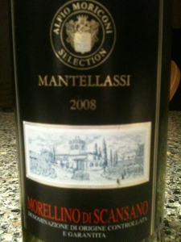

|
Europe >
Italia >
Toscana >
Grosseto >
Morellino di Scansano DOCG >
Mantellassi >
Morellino di Scansano
2008 Morellino di Scansano DOCG
Mantellassi

Toscana, Italia
A blend of 85% Sangiovese with 15% Cabernet Sauvignon and Canaiolo Nero.
13.5% alcohol
750 ml

2009 tasting - A light red with a purple hue, this wine has a minerality to the bouquet and a thick flavor with a subtle chewiness and a dry, slightly tart aftertaste.
More about Cabernet Sauvignon, Canaiolo Nero, Sangiovese.
|
|